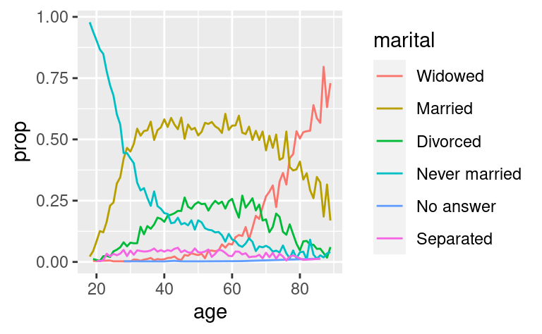

15 Fattori
15.1 Introduzione
In R, i fattori sono usati per lavorare con variabili categoriche, variabili che hanno un insieme fisso e noto di possibili valori. Sono anche utili quando si vogliono visualizzare vettori di caratteri in un ordine non alfabetico.
Storicamente, i fattori erano molto più facili da lavorare rispetto ai caratteri. Di conseguenza, molte delle funzioni in R base convertono automaticamente i caratteri in fattori. Questo significa che i fattori spesso compaiono in posti dove non sono effettivamente utili. Fortunatamente, non dovete preoccuparvi di questo nel tidyverse, e potete concentrarvi sulle situazioni in cui i fattori sono veramente utili.
15.1.1 Prerequisiti
Per lavorare con i fattori, useremo il pacchetto forcats, che fa parte del nucleo del tidyverse. Fornisce strumenti per trattare con le variabili categoriche (ed è un anagramma di factors!) usando una vasta gamma di helper per lavorare con i fattori.
15.1.2 Imparare di più
Se volete saperne di più sui fattori, vi consiglio di leggere il documento di Amelia McNamara e Nicholas Horton, Wrangling categorical data in R. Questo articolo espone parte della storia discussa in stringsAsFactors: An unauthorized biography e stringsAsFactors = <sigh>, e confronta gli approcci ordinati ai dati categorici delineati in questo libro con i metodi base di R. Una prima versione dell’articolo ha aiutato a motivare e a dare un ambito al pacchetto forcats; grazie Amelia & Nick!
15.2 Creazione di fattori
Immaginate di avere una variabile che registra il mese:
x1 <- c("Dec", "Apr", "Jan", "Mar")Usare una stringa per registrare questa variabile ha due problemi:
-
Ci sono solo dodici mesi possibili, e non c’è niente che vi salvi dagli errori di battitura:
x2 <- c("Dec", "Apr", "Jam", "Mar") -
Non ordina in modo utile:
sort(x1) #> [1] "Apr" "Dec" "Jan" "Mar"
Potete risolvere entrambi questi problemi con un fattore. Per creare un fattore dovete iniziare creando una lista dei livelli validi:
month_levels <- c(
"Jan", "Feb", "Mar", "Apr", "May", "Jun",
"Jul", "Aug", "Sep", "Oct", "Nov", "Dec"
)Ora potete creare un fattore:
y1 <- factor(x1, levels = month_levels)
y1
#> [1] Dec Apr Jan Mar
#> Levels: Jan Feb Mar Apr May Jun Jul Aug Sep Oct Nov Dec
sort(y1)
#> [1] Jan Mar Apr Dec
#> Levels: Jan Feb Mar Apr May Jun Jul Aug Sep Oct Nov DecE tutti i valori non presenti nel set saranno silenziosamente convertiti in NA:
y2 <- factor(x2, levels = month_levels)
y2
#> [1] Dec Apr <NA> Mar
#> Levels: Jan Feb Mar Apr May Jun Jul Aug Sep Oct Nov DecSe vuoi un avvertimento, puoi usare readr::parse_factor():
y2 <- parse_factor(x2, levels = month_levels)
#> Warning: 1 parsing failure.
#> row col expected actual
#> 3 -- value in level set JamSe ometti i livelli, saranno presi dai dati in ordine alfabetico:
factor(x1)
#> [1] Dec Apr Jan Mar
#> Levels: Apr Dec Jan MarA volte si preferisce che l’ordine dei livelli corrisponda all’ordine della prima apparizione nei dati. Potete farlo quando create il fattore impostando i livelli su unique(x), o dopo il fatto, con fct_inorder():
f1 <- factor(x1, levels = unique(x1))
f1
#> [1] Dec Apr Jan Mar
#> Levels: Dec Apr Jan Mar
f2 <- x1 %>% factor() %>% fct_inorder()
f2
#> [1] Dec Apr Jan Mar
#> Levels: Dec Apr Jan MarSe hai bisogno di accedere direttamente all’insieme dei livelli validi, puoi farlo con levels():
levels(f2)
#> [1] "Dec" "Apr" "Jan" "Mar"15.3 Indagine sociale generale
Per il resto di questo capitolo, ci concentreremo su forcats::gss_cat. Si tratta di un campione di dati dal General Social Survey, che è un sondaggio di lunga data negli Stati Uniti condotto dall’organizzazione di ricerca indipendente NORC dell’Università di Chicago. Il sondaggio ha migliaia di domande, quindi in gss_cat ne ho selezionate alcune che illustrano alcune sfide comuni che incontrerete quando lavorate con i fattori.
gss_cat
#> # A tibble: 21,483 × 9
#> year marital age race rincome partyid relig denom tvhours
#> <int> <fct> <int> <fct> <fct> <fct> <fct> <fct> <int>
#> 1 2000 Never married 26 White $8000 to 9999 Ind,near r… Prot… Sout… 12
#> 2 2000 Divorced 48 White $8000 to 9999 Not str re… Prot… Bapt… NA
#> 3 2000 Widowed 67 White Not applicable Independent Prot… No d… 2
#> 4 2000 Never married 39 White Not applicable Ind,near r… Orth… Not … 4
#> 5 2000 Divorced 25 White Not applicable Not str de… None Not … 1
#> 6 2000 Married 25 White $20000 - 24999 Strong dem… Prot… Sout… NA
#> # … with 21,477 more rows(Ricorda, poiché questo set di dati è fornito da un pacchetto, puoi ottenere maggiori informazioni sulle variabili con ?gss_cat).
Quando i fattori sono memorizzati in una tibble, non puoi vedere i loro livelli così facilmente. Un modo per vederli è con count():
gss_cat %>%
count(race)
#> # A tibble: 3 × 2
#> race n
#> <fct> <int>
#> 1 Other 1959
#> 2 Black 3129
#> 3 White 16395O con un grafico a barre:
Per impostazione predefinita, ggplot2 elimina i livelli che non hanno alcun valore. Potete forzarne la visualizzazione con:
ggplot(gss_cat, aes(race)) +
geom_bar() +
scale_x_discrete(drop = FALSE)
Questi livelli rappresentano valori validi che semplicemente non si sono verificati in questo set di dati. Sfortunatamente, dplyr non ha ancora un’opzione drop, ma la avrà in futuro.
Quando si lavora con i fattori, le due operazioni più comuni sono cambiare l’ordine dei livelli e cambiare i valori dei livelli. Queste operazioni sono descritte nelle sezioni seguenti.
15.3.1 Esercizio
Esplora la distribuzione del
reddito(reddito dichiarato). Cosa rende il grafico a barre predefinito difficile da capire? Come potresti migliorare il grafico?Qual è il
religpiù comune in questo sondaggio? Qual è il più comunepartyid?- A quale
religsi applica ildenom(denominazione)? Come puoi scoprirlo con una tabella? Come puoi scoprirlo con una visualizzazione?
- A quale
15.4 Modificare l’ordine dei fattori
Spesso è utile cambiare l’ordine dei livelli dei fattori in una visualizzazione. Per esempio, immaginate di voler esplorare il numero medio di ore trascorse a guardare la TV al giorno nelle varie religioni:
relig_summary <- gss_cat %>%
group_by(relig) %>%
summarise(
age = mean(age, na.rm = TRUE),
tvhours = mean(tvhours, na.rm = TRUE),
n = n()
)
ggplot(relig_summary, aes(tvhours, relig)) + geom_point()
È difficile interpretare questo grafico perché non c’è uno schema generale. Possiamo migliorarlo riordinando i livelli di relig usando fct_reorder(). fct_reorder() prende tre argomenti:
-
f, il fattore di cui volete modificare i livelli. -
x, un vettore numerico che volete usare per riordinare i livelli. - Opzionalmente,
fun, una funzione che viene usata se ci sono più valori dixper ogni valore dif. Il valore predefinito èmedian.
ggplot(relig_summary, aes(tvhours, fct_reorder(relig, tvhours))) +
geom_point()Riordinare la religione rende molto più facile vedere che le persone nella categoria “Non so” guardano molta più TV, e l’Induismo e altre religioni orientali ne guardano molto meno.
Quando cominciate a fare trasformazioni più complicate, vi consiglio di spostarle fuori da aes() e in un passo separato mutate(). Per esempio, potreste riscrivere il grafico di cui sopra come:
relig_summary %>%
mutate(relig = fct_reorder(relig, tvhours)) %>%
ggplot(aes(tvhours, relig)) +
geom_point()E se creassimo un grafico simile guardando come l’età media varia a seconda del livello di reddito dichiarato?
rincome_summary <- gss_cat %>%
group_by(rincome) %>%
summarise(
age = mean(age, na.rm = TRUE),
tvhours = mean(tvhours, na.rm = TRUE),
n = n()
)
ggplot(rincome_summary, aes(age, fct_reorder(rincome, age))) + geom_point()Qui, riordinare arbitrariamente i livelli non è una buona idea! Questo perché rincome ha già un ordine di principio con cui non dovremmo scherzare. Riservate fct_reorder() ai fattori i cui livelli sono ordinati arbitrariamente.
Tuttavia, ha senso mettere “Non applicabile” davanti agli altri livelli speciali. Potete usare fct_relevel(). Prende un fattore, f, e poi un qualsiasi numero di livelli che volete spostare all’inizio della riga.
ggplot(rincome_summary, aes(age, fct_relevel(rincome, "Not applicable"))) +
geom_point()
Perché pensi che l’età media per “Non applicabile” sia così alta?
Un altro tipo di riordino è utile quando si colorano le linee di un grafico. fct_reorder2() riordina il fattore in base ai valori y associati ai valori x più grandi. Questo rende il grafico più facile da leggere perché i colori delle linee si allineano alla legenda.
by_age <- gss_cat %>%
filter(!is.na(age)) %>%
count(age, marital) %>%
group_by(age) %>%
mutate(prop = n / sum(n))
ggplot(by_age, aes(age, prop, colour = marital)) +
geom_line(na.rm = TRUE)
ggplot(by_age, aes(age, prop, colour = fct_reorder2(marital, age, prop))) +
geom_line() +
labs(colour = "marital")
Infine, per i grafici a barre, puoi usare fct_infreq() per ordinare i livelli in frequenza crescente: questo è il tipo più semplice di riordino perché non ha bisogno di variabili extra. Potreste volerlo combinare con fct_rev().
gss_cat %>%
mutate(marital = marital %>% fct_infreq() %>% fct_rev()) %>%
ggplot(aes(marital)) +
geom_bar()
15.5 Modificare i livelli dei fattori
Più potente che cambiare l’ordine dei livelli è cambiare i loro valori. Questo ti permette di chiarire le etichette per la pubblicazione e di far collassare i livelli per visualizzazioni di alto livello. Lo strumento più generale e potente è fct_recode(). Ti permette di ricodificare, o cambiare, il valore di ogni livello. Per esempio, prendete il gss_cat$partyid:
gss_cat %>% count(partyid)
#> # A tibble: 10 × 2
#> partyid n
#> <fct> <int>
#> 1 No answer 154
#> 2 Don't know 1
#> 3 Other party 393
#> 4 Strong republican 2314
#> 5 Not str republican 3032
#> 6 Ind,near rep 1791
#> # … with 4 more rowsI livelli sono concisi e incoerenti. Modifichiamoli per essere più lunghi e usare una costruzione parallela.
gss_cat %>%
mutate(partyid = fct_recode(partyid,
"Republican, strong" = "Strong republican",
"Republican, weak" = "Not str republican",
"Independent, near rep" = "Ind,near rep",
"Independent, near dem" = "Ind,near dem",
"Democrat, weak" = "Not str democrat",
"Democrat, strong" = "Strong democrat"
)) %>%
count(partyid)
#> # A tibble: 10 × 2
#> partyid n
#> <fct> <int>
#> 1 No answer 154
#> 2 Don't know 1
#> 3 Other party 393
#> 4 Republican, strong 2314
#> 5 Republican, weak 3032
#> 6 Independent, near rep 1791
#> # … with 4 more rowsfct_recode() lascerà i livelli che non sono esplicitamente menzionati così come sono, e ti avvertirà se accidentalmente fai riferimento ad un livello che non esiste.
Per combinare i gruppi, puoi assegnare più livelli vecchi allo stesso livello nuovo:
gss_cat %>%
mutate(partyid = fct_recode(partyid,
"Republican, strong" = "Strong republican",
"Republican, weak" = "Not str republican",
"Independent, near rep" = "Ind,near rep",
"Independent, near dem" = "Ind,near dem",
"Democrat, weak" = "Not str democrat",
"Democrat, strong" = "Strong democrat",
"Other" = "No answer",
"Other" = "Don't know",
"Other" = "Other party"
)) %>%
count(partyid)
#> # A tibble: 8 × 2
#> partyid n
#> <fct> <int>
#> 1 Other 548
#> 2 Republican, strong 2314
#> 3 Republican, weak 3032
#> 4 Independent, near rep 1791
#> 5 Independent 4119
#> 6 Independent, near dem 2499
#> # … with 2 more rowsDovete usare questa tecnica con attenzione: se raggruppate insieme categorie che sono veramente diverse finirete per ottenere risultati fuorvianti.
Se volete collassare molti livelli, fct_collapse() è un’utile variante di fct_recode(). Per ogni nuova variabile, potete fornire un vettore di vecchi livelli:
gss_cat %>%
mutate(partyid = fct_collapse(partyid,
other = c("No answer", "Don't know", "Other party"),
rep = c("Strong republican", "Not str republican"),
ind = c("Ind,near rep", "Independent", "Ind,near dem"),
dem = c("Not str democrat", "Strong democrat")
)) %>%
count(partyid)
#> # A tibble: 4 × 2
#> partyid n
#> <fct> <int>
#> 1 other 548
#> 2 rep 5346
#> 3 ind 8409
#> 4 dem 7180A volte si vuole semplicemente mettere insieme tutti i piccoli gruppi per rendere più semplice un grafico o una tabella. Questo è il compito di fct_lump():
gss_cat %>%
mutate(relig = fct_lump(relig)) %>%
count(relig)
#> # A tibble: 2 × 2
#> relig n
#> <fct> <int>
#> 1 Protestant 10846
#> 2 Other 10637Il comportamento predefinito è quello di raggruppare progressivamente i gruppi più piccoli, assicurandosi che l’aggregato sia ancora il gruppo più piccolo. In questo caso non è molto utile: è vero che la maggioranza degli americani in questo sondaggio sono protestanti, ma probabilmente abbiamo esagerato.
Invece, possiamo usare il parametro n per specificare quanti gruppi (esclusi gli altri) vogliamo mantenere:
gss_cat %>%
mutate(relig = fct_lump(relig, n = 10)) %>%
count(relig, sort = TRUE) %>%
print(n = Inf)
#> # A tibble: 10 × 2
#> relig n
#> <fct> <int>
#> 1 Protestant 10846
#> 2 Catholic 5124
#> 3 None 3523
#> 4 Christian 689
#> 5 Other 458
#> 6 Jewish 388
#> 7 Buddhism 147
#> 8 Inter-nondenominational 109
#> 9 Moslem/islam 104
#> 10 Orthodox-christian 95